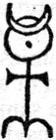

İyi niyetli de olsa, ruhunun ve kehanetlerinin Şeytan’ın gözbağcılıkları olduğu açık görünüyor... Bunlar birçok kimseyi kandırabilecek, Efendimiz Yüce Tanrı’nın kilisesine büyük zarar ve utanç verebilecek kehanetlerdir.
(Guillaume Postel hakkında, Cizvit Pederler Salmeron, Lhoost, Ugoletto tarafından Ignatius Loyola’ya iletilen görüş, 10 Mayıs 1545)
Belbo, ilgisizce, yazdığı sayfaları okumadan, kişisel yollamaları bir yana bırakarak, oluşturduğu kurguyu anlattı bize. Hatta, bireşimleri Abulafia’nın sağladığı izlenimini verdi bize. Bacon’ın, Gül-Haç Manifestolarının yazarı olduğuna daha önce bir yerde rastlamıştım. Ama bir şey özellikle dikkatimi çekti: Bacon’ın, St. Albans Vikontu oluşu.
Kafamın içinde bir şey vızıldayıp duruyordu, tezimle ilgili bir şey. Geceyi fiş dosyalarımı didik didik ederek geçirdim.
“Beyler,” dedim ertesi sabah suç arkadaşlarıma, belli bir ağırbaşlılıkla. “Bağları icat etmemize gerek yok. Bağlar zaten var. 1164’te, Ermiş Bernard, Tapınakçılar’ı yasallaştırmak için, Troyes’da bir konsil toplanması fikrini ortaya attığında, bu toplantıyı düzenlemekle görevlendirilenler arasında, St. Albans başrahibi de var. St. Albans, Britanya Adaları’nı Hıristiyanlaştıran ilk ingiliz şehidinin adıdır aynı zamanda. Sonradan Bacon’ın mülkü olan Verulamium’da doğmuştu. Keltti, Ermiş Bernard gibi, hiç kuşkusuz, o da erginlenmiş bir Druid’di.”
“Bu yeterli değil,” dedi Belbo.
“Durun. Bu Saint Albans başrahibi, Saint-Martin-des-Champs’ın başrahibidir, daha sonra Conservatoire des Arts e des Metiers’in kurulduğu manastırın!”
Belbo tepki gösterdi: “Ne diyorsunuz!”
“Hepsi bu kadar değil,” diye ekledim, “Conservatoire, Bacon’a bir saygı gösterisi olarak düşünülmüştür. III. yılın 25 Brumaire’inde226 Convention, Comite d’Instruction Publique’i, Bacon’ın tüm yapıtlarını yeniden bastırmakla görevlendirdi. Aynı yılın 18 Vendelaire’inde,227 Convention, Bacon’ın Yeni Atlantis’te sözünü ettiği Süleyman’ın Evi örnek alınarak, insanlığın tüm teknik buluşlarını bir araya toplayacak bir sanatlar ve meslekler evi kurulmasını öngören bir yasa çıkardı.”
“Yani?” diye sordu Diotallevi.
“Sarkaç, Conservatoire’da,” dedi Belbo. Diotallevi’nin tepkisinden, Belbo’nun ona Foucault sarkacıyla ilgili düşüncelerinden söz etmiş olduğunu anladım.”
“Yavaş yavaş ilerleyelim,” dedim. Sarkaç daha geçen yüzyılda icat edilip kuruldu. Şimdilik atlayalım onu.”
“Atlayalım mı?” dedi Belbo. “Siz hiç John Dee’nin Monad Hieroglyphe’ini görmediniz mi? Evrenin tüm bilimlerini bir araya toplayan tılsımını? Tıpkı sarkaca benzemiyor mu?”

“Pekâlâ,” dedim, “iki olgu arasında bir ilişki kurabileceğimizi varsayalım. Peki, St. Albans’dan Sarkaç’a nasıl geçeceğiz?”
Birkaç gün içinde bunun nasıl olacağını öğrenecektim.
“Demek ki, St. Albans başrahibi, Saint-Martin-des-Champs’ın başrahibidir; bu nedenle de burası bir Tapınakseverler merkezine dönüşüyor. Bacon, emlâki sayesinde St. Alban’lı Druid müritleriyle bağ kuruyor. Şimdi iyi dinleyin: Bacon, İngiltere’de mesleğine başlarken, Guillaume Postel. Fransa’da kendi mesleğini sona erdiriyor.”
(Belbo’nun yüzünde belli belirsiz bir seyirme ayırdettim, Ricardo’nun sergisindeki konuşmayı anımsadım; Postel, Lorenza’yı düşünsel olarak elinden alan adamı çağrıştırmıştı ona. Ama yalnızca bir an sürdü bu.)
“Postel İbranca öğreniyor; bu dilin bütün dillerin anası olduğunu göstermeye çalışıyor, Zohar ile Bahir’i çeviriyor, Kabalacılar’ la bağ kuruyor, Alman Gül-Haç gruplarınınkine benzer bir evrensel barış tasarısı ortaya atıyor, Fransa kralını sultanla bir antlaşmaya razı etmeye çalışıyor, Yunanistan’a, Suriye’ye, Küçük Asya’ya gidiyor, Arapça öğreniyor; tek sözcükle, Christian Rosencreutz’un yolundan gidiyor. Bazı yazılarını, Rosispergius, ‘çiy saçan’ diye imzalaması bir rastlantı değildir. Gassendi, Examen Philosophiae Fluddanae’sinde, Rosencreutz’un rosa’dan değil, çiy anlamına gelen ros’tan kaynaklandığını söylüyor. Elyazmalarından birinde, vakit erişinceye dek saklanması gereken bir gizden söz ediyor: ‘inciler domuzlara atılmasın diye,’ diyor. Bu İncil alıntısının nerede yer aldığını biliyor musunuz? Kimyasal Düğün’ün ilk sayfasında, peder Marin Mersenne de, Gül-Haçlar Fludd’ı suçlarken, onun da atheus magnus228 olduğunu Postel’le aynı hamurdan yapıldığını söylüyor. Öte yandan, öyle görünüyor ki, Dee ile Postel, 1550’de karşılaşıyorlar, ama ne yazık ki, Plan’ın, 1584’te buluşmaları öngörülen iki büyük üstadı olduklarını henüz bilmiyorlar; otuz yıl sonrasına değin de bilmeyeceklerdir. Postel ne diyor, bakın: Nuh’un en büyük oğlunun soyundan geldiği için, Nuh da, Kelt soyunun, dolayısıyla da, Druid uygarlığının kurucusu olduğu için, Fransa kralı, Dünya Kralı sanına tek yasal adaydır. Tastamam böyle diyor, Agarttha Dünyası’nın kralı. Ama bunu Alveydre’den üç yüzyıl önce söylüyor. Joanna diye bir moruğa gönlünü kaptırdığını, onu kutsal Sophia saydığını bir 3’ana bırakalım: adamın bir tahtası eksik olsa gerek. Unutmayalım ki, güçlü düşmanları vardı; köpek, iğrenç canavar, çirkef, sapkın, cin çarpmış diye niteliyorlardı onu. Gene de, Joanna rezaletine karşın, Engizisyon sapkın saymıyor onu, amens sayıyor, yani biraz kaçık. Adama bir şey yapamıyorlar, oldukça güçlü bir grubun sözcüsü olduğu biliniyor çünkü. Bunu sana söylüyorum Diotallevi, Postel Doğu’da da yolculuklar yapıyor; Isaac Luria’nın çağdaşıydı. Bundan istediğin sonuçları çıkarabilirsin. Güzel, 1564’te (Dee’nin Monas Hieroglyphica’’sini yazdığı yıl) Postel sapkınlıklarından dönüyor, çekiliyor... Bilin bakalım nereye? Saint-Martin-des-Champs manastırına! Ne bekliyor? Kuşkusuz 1584’ü bekliyor.”
“Kuşkusuz,” diye doğruladı Diotallevi.
Sürdürdüm: “Aynı görüşteyiz, değil mi? Postel, İngiliz grubuyla bağ kurmayı bekleyen Fransız grubunun büyük üstadıdır. Ama 1581’de, buluşmadan üç yıl önce ölüyor. Sonuç bir: 1584’teki buluşma gerçekleşmiyor, çünkü en önemli anda Postel gibi keskin zekâlı biri yoktur artık. Postel olsaydı, takvim karışıklığı yüzünden ne olduğunu anlayabilirdi. Sonuç iki: Saint-Martin, Tapınakçılar’ın kendi evlerindeymiş gibi güvenlik içinde oldukları, üçüncü buluşmayı gerçekleştirmekle yükümlü adamın kapanıp beklediği yerdir. Saint-Martin-des- Champs, Sığınak’tı!”
“Her şey tıpkı bir mozaik gibi yerli yerine oturuyor.”
“Şimdi beni izleyin. Buluşmanın başarısızlığa uğradığı sırada, Bacon daha yirmi yaşındadır. Ama 1621’de St. Albans Vikontu oluyor. Atalarından kalma topraklarında ne buluyor? Bir gizem. Birinin onu yolsuzlukla suçlayıp bir süre hapse attırması da tam bu yıla rastlıyor. Bacon birini korkutan bir şey bulmuştu. Kimi? Bacon, Saint-Martin’in denetim altına alındığını o dönemde anlıyor, Süleyman’ın Evi’ni, deneysel yollarla gizin ortaya çıkarılabileceği laboratuvarı orada gerçekleştirme fikrini oluşturuyor.”
“Ama,” diye sordu Diotallevi, “Bacon’ın ardıllarıyla on sekizinci yüzyıl sonlarındaki devrimci gruplar arasında nasıl bağ kuracağız?”
“Masonluk olmasın sakın?” dedi Belbo.
“Olağanüstü bir fikir. Aslında, Agliè de o gece şatoda bunu önermişti.”
“Olayları yeniden kurmalıyız. O çevrelerde tam anlamıyla neler oluyordu?”